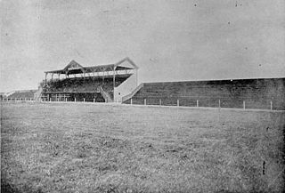
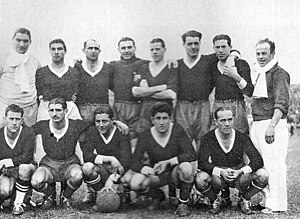
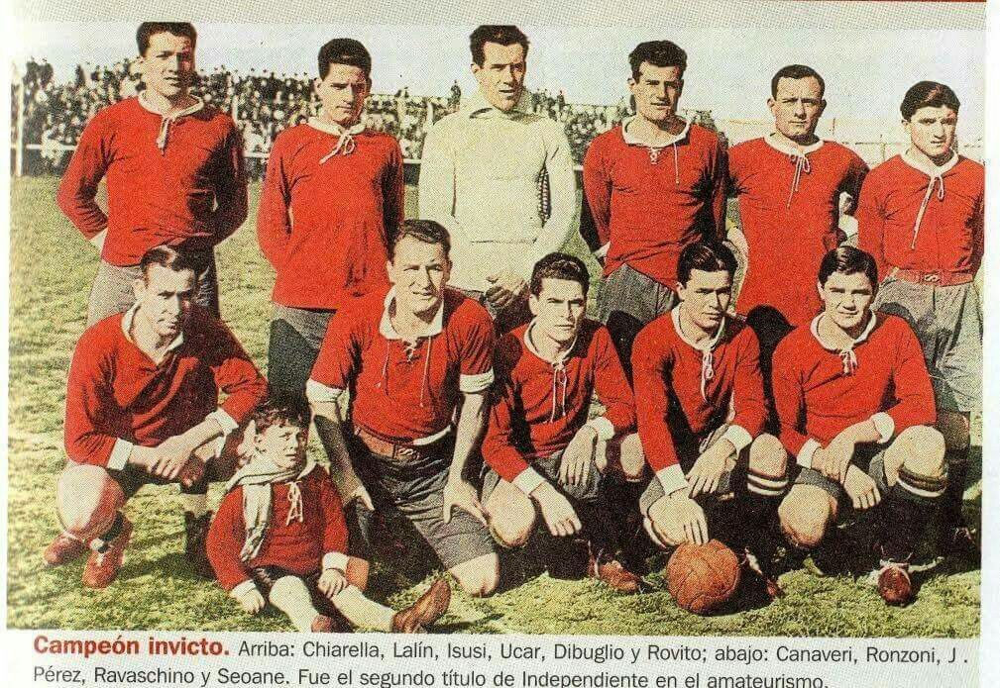
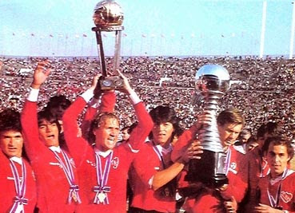
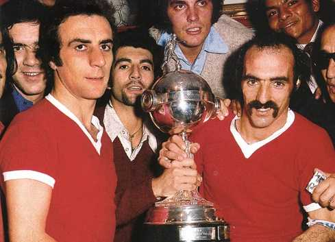
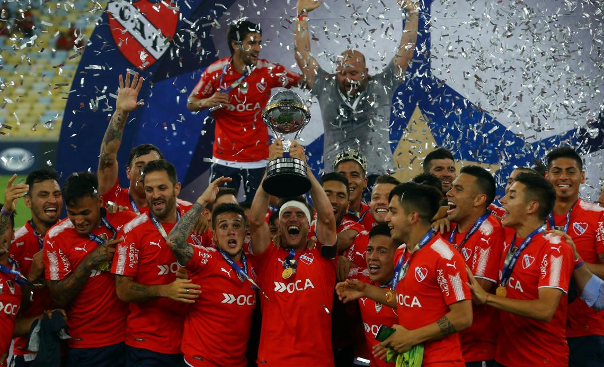
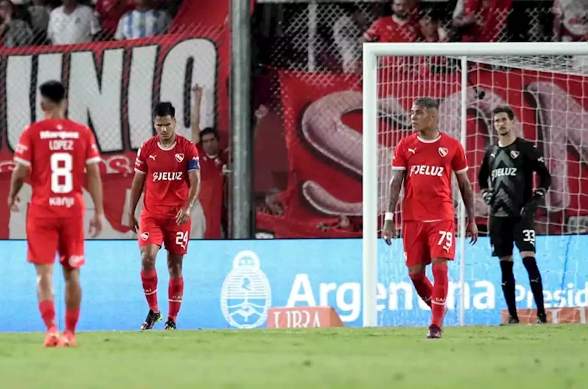

INFORMACION
ORIGEN
Fue fundado el 1 de enero de 1905 por unos jóvenes empleados independentistas del Club Maipú. El fútbol masculino es su disciplina más destacada, cuyo primer equipo participa en la Liga Profesional de Fútbol Argentino, aunque también se practican otras disciplinas deportivas a nivel amateur y semiprofesional. Según los archivos del propio club, pensaron en la posibilidad de unirse a otro club, pero la idea quedó rápidamente descartada. Ellos querían ser un club independiente. Fue entonces cuando la voz de Marcelo Degiorgi se elevó: "Ahí está el nombre. ¡Independiente!
 AMATEURISMO
Independiente fue autorizado para jugar en la segunda y tercera división de la liga del fútbol amateur en Argentina. La formación de la segunda división jugó con regularidad, pero la de la tercera tuvo grandes altibajos, perdiendo por goleada sus dos últimos partidos, uno de ellos drásticamente por 21 a 1 contra Atlanta. Según los hinchas este hecho ocurrió debido a que el arquero titular, Arístides Langone (quien era al mismo tiempo el presidente debido a la poca cantidad de socios en el club en aquel momento) se había enfermado ya que el invierno se acercaba, y habían utilizado para reemplazarlo a un improvisado e inexperto arquero, de nacionalidad uruguaya llamado Costa, aunque por respeto al club y a sus jugadores, jamás mencionaban su nombre. Ante esta crisis tuvieron que reaccionar rápidamente, ya que el 9 de junio de 1907, se enfrentarían por primera vez en la historia al que con el tiempo pasaría a ser su clásico rival, Racing Club. Con este antecedente inmediato, la mayoría pensaba que sería una fácil victoria para la Academia, y hasta los simpatizantes de este equipo, agrandados por creer que su rival era inferior, predecían otra humillante derrota, esta vez 40 a 0, pintando estas predicciones en los muros del barrio. Llegó la tarde del choque e Independiente, con un nuevo arquero, ganó 3 a 2. Esta tarde fue muy recordada por lo grata que fue para los simpatizantes de Independiente, ya que el mismo Rosendo Degiorgi que creara el club, faltando tan solo dos minutos para que finalizara el partido, metió el gol del triunfo.
PROFESIONALISMO
Con el comienzo del profesionalismo Independiente evoluciono en todos los aspectos, convirtiendose en dicho momento en el club mas grande del pais y del continente. Durante estos anos se vivio la "epoca dorada" del Rojo, que obtuvo infinidad de titulos y conquistas tanto nacionales como internacionales. Su principal romance era con la copa mas importante a nivel sudamericano, la Copa Libertadores, la cual gano 4 veces seguidas, y actualmente tiene 7, siendo el equipo Americano que mas veces la obtuvo. En esta gloriosa epoca se destacaron jugadores como Ricardo Bochini, maximo idolo del club, Ricardo Pavoni, Jorge Burruchaga, Nestor Clausen, entre otras glorias del Rojo.
 SU PRESENTE
El presente de Independiente se encuentra altamente condicionado por su situacion economica, a la cual lo han llevado sus ultimos dirigentes, con gastos indebidos, jugadores caros y malas gestiones. Actualmente los hinchas encabezan una colecta para intentar ayudar a su club contribuyendo con fondos desde su bolsillo. La misma se encuentra ahora mismo en la suma de 900 millones de pesos, aunque ya se esta pagando la principal deuda que es la que se mantiene con el Club America de Mexico. Esta temporada no clasifico a ninguna copa internacional y se encuentra en los puestos bajos de la tabla de posiciones de la Liga Profesional. Con la llegada de Ricardo Zielinski su presente va mejorando de a poco en cuanto a puntos obtenidos, es por eso que el club ya esta enfocado en el proximo mercado de pases para incorporar jugadores de jerarquia y pelear un ingreso a copas.
 